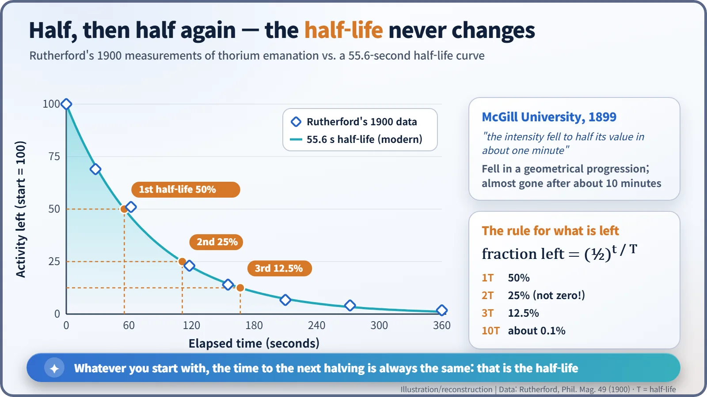
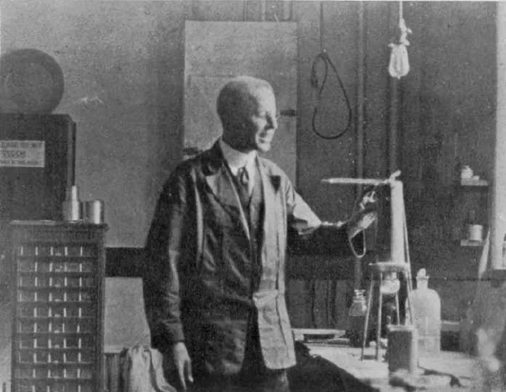
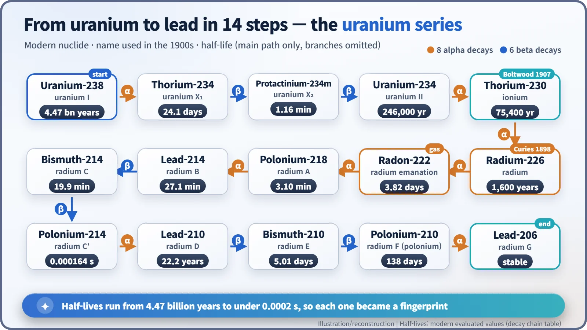

Nuclear History · 017
The Door That Moved the Needle — Half-life and Radioactive Decay Chains
A thorium reading that dropped whenever a door opened led Rutherford to a gas that halved in about a minute, and to the half-life as the fingerprint of every radioactive substance.
In 1899, at McGill University in Montreal, thorium readings dropped whenever someone opened a door. Ernest Rutherford traced the problem to a radioactive gas whose activity fell to half in about a minute, then half again, and again. That fixed "halving time" became the half-life, the fingerprint researchers used between 1902 and 1907 to sort dozens of new substances into the natural decay chains that run from uranium and thorium down to lead.
A door, a draught and a wandering reading
Someone opens a door at the far end of a laboratory, and on a bench across the room a delicate measurement suddenly drops. Put uranium on the bench and nothing happens; put thorium there and it does. This really happened, in 1899, at McGill University in Montreal. A faulty instrument? A draughty building? That small nuisance became the starting point of a word we now use every time radioactivity comes up: half-life. [1]
Thorium catches the breeze
Radioactivity had only just been discovered, and physicists everywhere were racing to measure the invisible rays given off by uranium and thorium. The method was simple. Radiation makes air conduct electricity (it ionizes the air), so the tiny current flowing between two metal plates tells you how strong the radiation is.
At McGill, the electrical engineering professor Robert B. Owens (1870–1940) had been studying the radiation from thorium in detail, and the physics professor Ernest Rutherford (1871–1937) took up the puzzle of readings that wandered with the air. In a paper signed off on 13 September 1899 and published in the Philosophical Magazine in January 1900, Rutherford noted that "the movement of the air caused by the opening or closing of a door" was enough to lower the thorium readings noticeably. Uranium was hardly affected. [1]
His explanation: thorium does not only send out rays, it also slowly releases a radioactive gas. When a draught carried the gas away, the reading fell. He called the gas the "emanation". Today we know it as radon-220. [8]
Half in a minute, then half again
The real discovery came next. Rutherford collected the emanation and tracked how its activity faded. In his words, "the intensity fell to half its value in about one minute." Then, after roughly another minute, it halved again, and again. The current, he wrote, "diminishes in a geometrical progression with the time." The modern value for the half-life of radon-220 is 55.6 seconds, so his one-minute estimate was impressively close. [1] [2]

The easiest way to picture a half-life is with coins. Toss 1,024 coins, keep only the ones that land heads, and toss those again. Nobody can say which coin will drop out on which throw, but each round removes roughly half. Atoms behave the same way. No one can predict when a single atom will decay, yet a huge crowd of atoms shrinks by half with clockwork regularity.
Here is a common misunderstanding: "after two half-lives, it's all gone." Not so. Half of a half, 25%, is still there. After three half-lives 12.5% remains, and even after ten, about 0.1%. The amount creeps towards zero but never simply switches off.
Rutherford and the chemist Frederick Soddy (1877–1956) soon showed that this rate did not care about temperature or chemical form. In their 1902 paper they wrote that "the rate of decay is unaltered by any known agency." The half-life had become a fixed property of each substance. [3]
Dozens of new substances, one family tree
That fixed property soon proved useful. In the early 1900s new "radioactive substances" were turning up by the dozen: thorium X, uranium X, radium emanation, radium A, B, C and more. Most existed in amounts far too small to weigh. Their half-lives became fingerprints: "this one halves in 3.8 days, so it must be radium emanation." [4]
Using those fingerprints, researchers worked out who was whose "daughter". In a 1904 paper for the Royal Society, "The Succession of Changes in Radioactive Bodies", Rutherford set out the order of the changes that follow radium. At Yale, the chemist Bertram B. Boltwood (1870–1927) found in 1904 that old minerals always contain radium and uranium in the same ratio, a sign that radium descends from uranium. In 1905 he was the first to suggest that the chain ends in lead, and in 1907 he found "ionium" (today thorium-230), the direct parent of radium. [5] [6]

The completed uranium series starts at uranium-238 and, after 8 alpha decays and 6 beta decays, stops at stable lead-206. Add the thorium series (thorium-232 to lead-208) and the actinium series (uranium-235 to lead-207), and you have the three decay chains found in nature. A fourth, the neptunium series, was identified only in 1947–1948, because its parent has all but vanished from the Earth. [7]

The range is astonishing: uranium-238 has a half-life of 4.47 billion years, polonium-214 less than two ten-thousandths of a second.
| Natural decay chain | Starts at | Ends at | Alpha / beta decays |
|---|---|---|---|
| Uranium (radium) series | Uranium-238 | Lead-206 | 8 / 6 |
| Thorium series | Thorium-232 | Lead-208 | 6 / 4 |
| Actinium series | Uranium-235 | Lead-207 | 7 / 4 |
The name came later
The word "half-life" was not there at the start. Early papers spelled it out, saying an activity "falls to half value", and as late as 1911 Rutherford's encyclopedia article called it the "period" of a substance. The longer phrase "half-life period" was in use for a while, and the short "half-life" settled in during the early 1950s. [4]
From there the story spread outward. In 1913 the ideas of isotopes and the displacement law gave each member of the decay chains a precise place in the periodic table. Boltwood opened the way to dating minerals from their ratio of lead to uranium. And today, when people work out how long spent nuclear fuel needs to be managed, the half-lives of the individual nuclides are the yardstick. A needle nudged by a draught under the door taught us how to read the atom's clock.